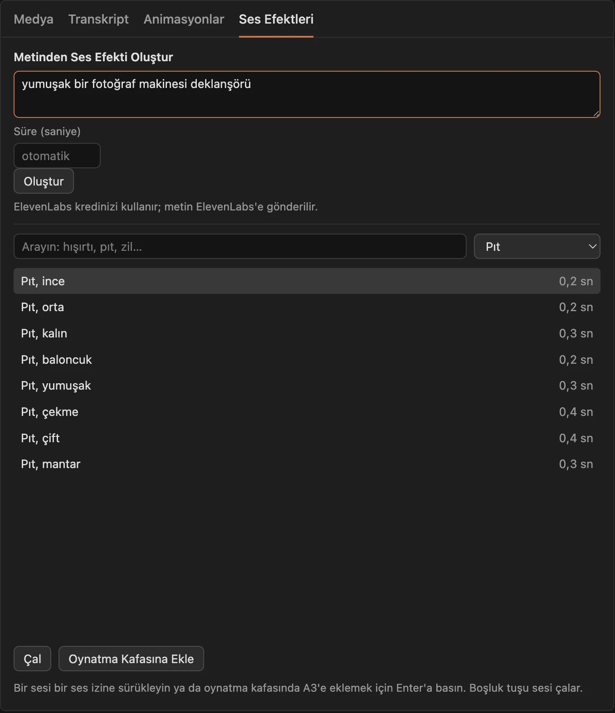

Ses Efektleri
Hışırtılar, pıtlar, tıklar ve zil sesleri, Timeline'a bırakmaya hazır. Yerleşik sesleri Kilnframe kendisi üretir.

Ses bul
- Arayın: hışırtı, pıt, zil… kutusuna yaz ya da bir Kategori seç: Hışırtı, Vızz, Yükselen, Pıt, Tık ve çıt, Zil ve çınlama, Darbe ve vuruş, Bozulma, Klavye ve fazlası.
- Çal dinletir; Boşluk seçtiğini çalar.
- Oynatma Kafasına Ekle sesi Timeline'da oynatma kafasının olduğu yere koyar; Enter da olur. Bir sesi bir ses izine sürükleyebilirsin de.
Daha fazla ses
Daha Fazla Ses, herkesin kullanabileceği (CC0) yaklaşık 200 gerçek kaydı indirir. Yalnızca düğmeye bastığında. Seslerin Kaynağı nereden geldiklerini listeler; videonda kaynak göstermen gerekmez.
Metinden ses yap
Metinden Ses Efekti Oluştur altında sesi tarif et, örneğin “ağır bir ahşap kapı gıcırdayarak açılıyor”; bir Süre (saniye) gir ya da ElevenLabs'e bırak, sonra Oluştur'a bas. Yeni ses listenin en üstüne, Sizin Oluşturduklarınız altına gelir.
Bunun için bir ElevenLabs API anahtarı gerekir (Ayarlar › Yapay zeka). Metin ElevenLabs'e gider ve ses ElevenLabs kredini kullanır; Kilnframe ilkinden önce bir kez sorar.
Buradan konan sesler konuşurken kısılmaz; kendi müziğin ve seslerin kısılır (Ses ve Mikser).